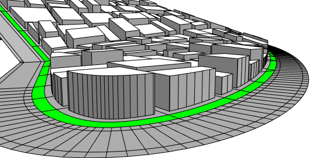
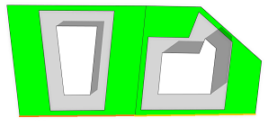
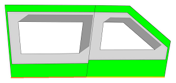
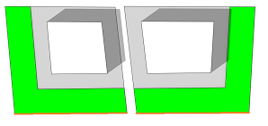

setback operation
Synopsis
setback(setbackDistance) { selector operator operations | selector operator operations ... }
setback(setbackDistance, uvSet) { selector operator operations | selector operator operations ... }
setback(setbackDistances) { selector operator operations | selector operator operations ... }
setback(setbackDistances, uvSet) { selector operator operations | selector operator operations ...}
Parameters
- setbackDistance (float)
The setback distance. - setbackDistances (float[])
An array containing setback distances separately for each face edge. - uvSet (float)
The uv set to use for uv-based selectors. Default is 0. - selector (keyword)
Semantic selection keyword:front, back, left, right, top, bottom, side The edges' outwards normals in the polygon plane are analyzed by classifying their directions into the corresponding scope quadrants. object.front, object.back, object.left, object.right, object.top, object.bottom, object.side The edges' outwards normals in the polygon plane are analyzed by classifying their directions into the corresponding object coordinate system quadrants. world.south, world.north, world.west, world.east, world.up, world.down, world.side The edges' outwards normals in the polygon plane are analyzed by classifying their directions into the corresponding world coordinate system quadrants. street.front, street.back, street.left, street.right Edges adjacent to a street can be selected with the street.front selector, rear edges can be selected with the street.back selector, and edges in between front and back can be selected with the street.left and street.right selectors. street.side combines left and right edges. These selectors depend on the availability of the streetWidth attribute map; see Auto-generated street width attributes. If the attribute is not available, component selection falls back to the object.xxx selectors. uv.left, uv.right, uv.bottom, uv.top Selects edges based on their uv-coordinates. The outwards-pointing normal of each edge is analyzed to classify the edge with (left, right) being the negative and positive u-axis and (bottom, top) being the negative and positive v-axis. all Selects all edges. index (float) Selects the index-th component (0-based). Too large and negative indices are modulo wrapped to a correct index. remainder Selects the remainder of the polygon. The remainder depends on the selected edges but is always the same, independent of the position of the remainder selector in the selector-operator sequence!
. - operator
The operator defines how the setback polygons are used to generate successor shapes. This also applies to shapes with more than one face. Valid operators are:- : Each polygon is put into a new shape.
- = All polygons corresponding to the selector are combined into one new shape.
- operations
A sequence of CGA operations to execute.
The setback operation selects a number of edges and sets them back by a given distance. This is somewhat similar to the polygon offset operation, with the difference that only a subset of the edges can be chosen for the setback.
A common setbackDistance can be specified for all edges. Alternatively, a separate distance for each face edge can be specified by passing an array of setbackDistances instead of a single setbackDistance to the operation. The array must be in face-edge order, i.e. the first element is the distance of the first edge of the first face, the second element is the distance of the second edge of the first face, and so on. Shared edges are considered separately for each face. If the array does not contain enough elements no setback is performed on the respective missing face edges. If the array contains more elements than the number of total face edges the respective setback distances are ignored. Such an array could be constructed using the comp function with the compSelector set to fe (face edges). The setbackPerEdge operation provides a more convenient way to set individual setback distances without having to construct an array manually.
Related
- setbackPerEdge operation
- setbackToArea operation
- comp operation
- offset operation
- shapeL operation
- shapeU operation
- shapeO operation
- comp function
- Edge attribute functions
Examples
Setback on Street Front
 |
LotInner --> Lot
Lot --> setback(5) { street.front = Garden |
remainder : Building }
Garden --> color("#00ff00")
Building --> offset(-3, inside)
extrude(world.up, rand(5, 15))
|
Individual distances
 |
// (9)[1,6,1,6,1,6,1,6,1]
dists = comp(fe) { all : case comp.index%2 == 0 : 1
else : 6 }
Lot --> setback(dists) { all = Garden |
remainder : Building }
An array of alternating distances is created using the comp function on a shape with 2 faces. Note that the distances in the array are applied in face-edge order. The first edge of each face is highlighted. The first distance is applied on the first edge of the first face (left) and the 5th distance is applied on the first edge of the second face (right).
|
 |
// (9)[4,0,2,0.5,5,0.5,2,2,0]
dists = comp(fe) { inside = 0 |
front :
case comp.index == 0 : 4
else : 5 |
back = 2 |
side = 0.5 }
Lot --> setback(dists) { all = Garden |
remainder : Building }
In this example the comp function is used with different selectors and operators.
|
 |
Left --> shapeL(5, 5) { shape = Garden |
remainder : Building }
// (4)[5,5,0,0]
dists = comp(fe) { front = 5 | right = 5 }
Right --> setback(dists) { all = Garden |
remainder : Building }
Left: A left-handed L shape using the shapeL operation. Right: A right-handed L shape shape using setback.
|
Also see the setbackPerEdge operation for more examples.
Copyright ©2008-2019 Esri R&D Center Zurich. All rights reserved.